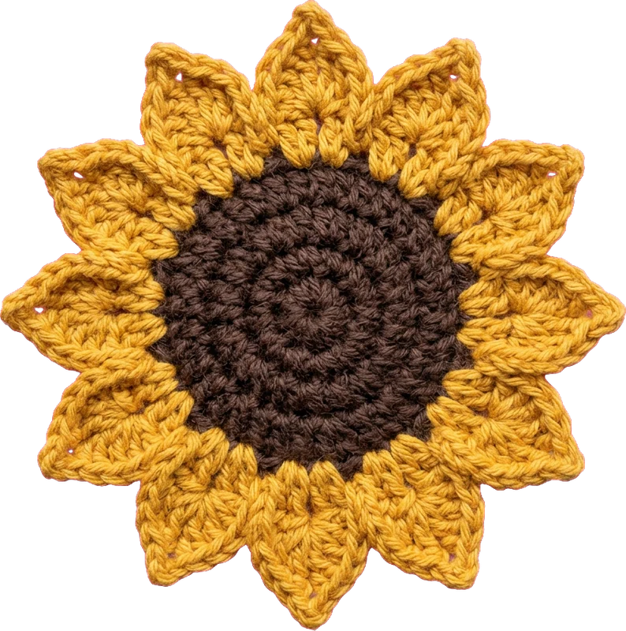

Motif
The Classic Granny Square
★☆☆
30 min · 4 mm hook · DK cotton, 2 colours
You'll need
Step by step
- Make a magic ring. Ch 3 (counts as your first dc), work 2 dc into the ring, ch 2. *3 dc, ch 2* three more times to make four corners. Join with a sl st to the top of the starting ch-3.
- Round 2: sl st across to the first ch-2 corner space. Ch 3, then (2 dc, ch 2, 3 dc) in the same space. Ch 1. In each remaining corner work (3 dc, ch 2, 3 dc) followed by ch 1. Join.
- Round 3: sl st to the corner space. Work the corner as before. Ch 1, then work 3 dc into the ch-1 space along the side, ch 1. Corner, ch 1, side, ch 1, and repeat all the way around. Join.
- Keep adding rounds, working one extra 3-dc group per side each time, until your square is the size you want. Fasten off and weave in the ends.
Tip: Swap colours every round for a scrappy, cheerful look.